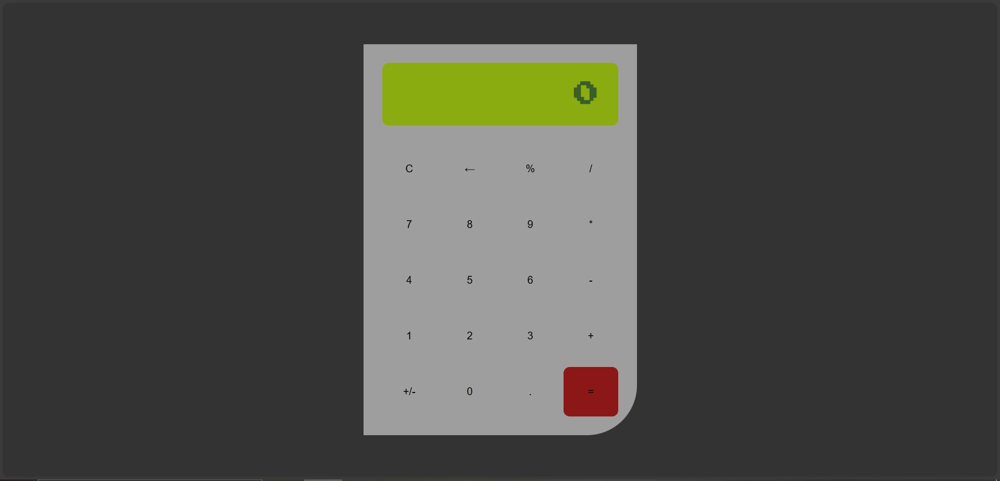

01/Heladería
Este proyecto fue realizado como entrega final para mi materia universitaria de "Algoritmos y
Estructura de datos" de la carrera de Licenciado en Sistemas Computacionales. Este programa en si
es uno de tipo escritorio usando Java GUI. El objetivo de la aplicación es administrar una
heladería.
02/SAFIM
Sistema de Asesoría de UABC - FIM. El fin de este sistema es el de proporcionar una manera
mas automatizada la información para registrar asesores y asesorías. Ademas de generar
reportes.

03/Supah Mushroom Hero!!!
Videojuego en 2d de plataformas parecido doodle jump. El juego es de un hongo
que va saltando de plataforma en plataforma de izquierda a derecha. Se planeaba
incluir mas cosas pero por cuestiones de tiempo no se pudo.
04/App de Gestión de Stock
Este software es una aplicación de consola con operaciones CRUD para la gestión
de inventarios. Ademas de ello fue realizado en Python. Esta app fue creado por
un reto de esta pagina.
05/Calculadora Web
Una Calculadora Web sencilla hecho de manera simple usando las tecnologías
necesarias para crear(HTML, CSS, JavaScript).
